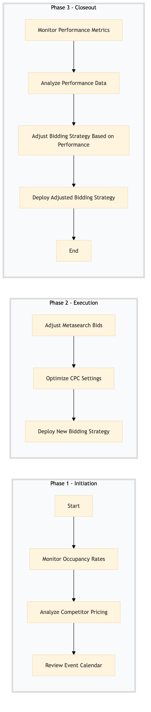

| Role | Steps |
|---|---|
| Revenue Manager | 1.1 1.2 1.3 2.1 2.2 2.3 3.1 3.2 3.3 3.4 |
| Step | Name | Role | System | Input | Output | KPI | Dec? | Exc? | Pain Point / Risk |
|---|---|---|---|---|---|---|---|---|---|
| 1.1 | Monitor Occupancy Rates | Revenue Manager | Oracle OPERA Cloud, IDeaS G3 RMS | Daily occupancy report | Occupancy analysis dashboard | Less than 15 minutes to generate the dashboard | Y | N | Inaccurate data leading to incorrect bidding strategies. |
| 1.2 | Analyze Competitor Pricing | Revenue Manager | Oracle OPERA Cloud, IDeaS G3 RMS | Competitor pricing data | Pricing analysis report | Less than 20 minutes to complete the analysis | Y | N | Outdated competitor data affecting bidding decisions. |
| 1.3 | Review Event Calendar | Revenue Manager | Oracle OPERA Cloud, IDeaS G3 RMS | Event calendar | Event impact assessment | Less than 10 minutes to review the calendar | Y | N | Missing event information leading to missed opportunities. |
| 2.1 | Adjust Metasearch Bids | Revenue Manager | Oracle OPERA Cloud, SynXis CRS | Occupancy analysis dashboard, pricing analysis report, event impact assessment | Updated metasearch bid strategy | Less than 30 minutes to adjust bids | Y | N | Manual adjustments leading to errors in bidding strategies. |
| 2.2 | Optimize CPC Settings | Revenue Manager | Oracle OPERA Cloud, SynXis CRS | Occupancy analysis dashboard, pricing analysis report, event impact assessment | Updated CPC settings | Less than 30 minutes to optimize CPCs | Y | N | Inefficient CPC management leading to higher advertising costs. |
| 2.3 | Deploy New Bidding Strategy | Revenue Manager | Oracle OPERA Cloud, SynXis CRS | Updated metasearch bid strategy, updated CPC settings | Bidding strategy deployment confirmation | Less than 10 minutes to deploy the new strategy | Y | N | Delayed deployment causing missed opportunities. |
| 3.1 | Monitor Performance Metrics | Revenue Manager | Oracle OPERA Cloud, SynXis CRS | Bidding strategy deployment confirmation | Performance metrics dashboard | Less than 15 minutes to generate the dashboard | Y | N | Inaccurate performance data affecting decision-making. |
| 3.2 | Analyze Performance Data | Revenue Manager | Oracle OPERA Cloud, SynXis CRS | Performance metrics dashboard | Performance analysis report | Less than 20 minutes to complete the analysis | Y | N | Outdated performance data leading to suboptimal strategies. |
| 3.3 | Adjust Bidding Strategy Based on Performance | Revenue Manager | Oracle OPERA Cloud, SynXis CRS | Performance analysis report | Adjusted bidding strategy | Less than 30 minutes to adjust the strategy | Y | N | Manual adjustments leading to errors in bidding strategies. |
| 3.4 | Deploy Adjusted Bidding Strategy | Revenue Manager | Oracle OPERA Cloud, SynXis CRS | Adjusted bidding strategy | Bidding strategy deployment confirmation | Less than 10 minutes to deploy the new strategy | Y | N | Delayed deployment causing missed opportunities. |
This process outlines how Marriott Bonvoy manages metasearch bidding and CPC (Cost Per Click) management to optimize online hotel bookings through various distribution channels.